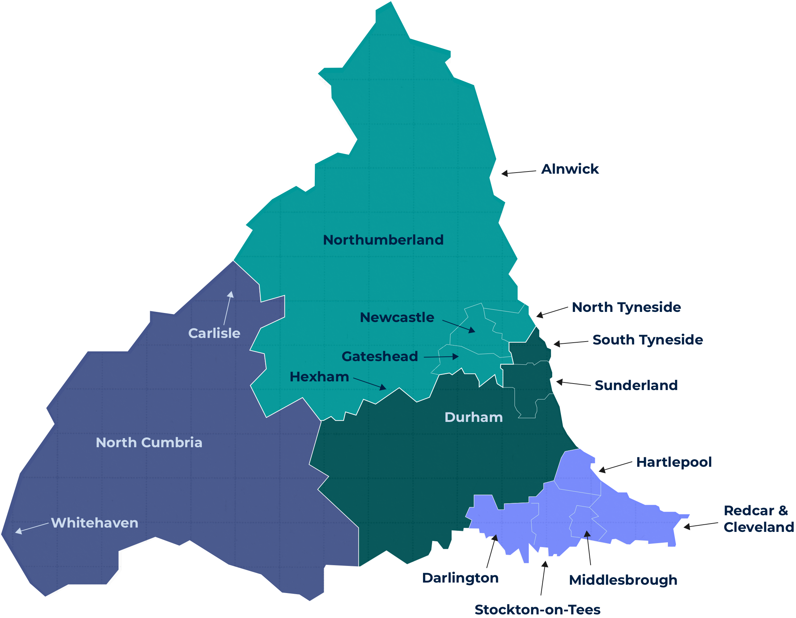

{% renderFile "./copy/intro.md" %}
{% renderFile "./copy/universities.md" %}
{% logoset logos.university, '60' %}
{% renderFile "./copy/nhs.md" %}
{% logoset logos.nhs, '80' %}
{% renderFile "./copy/industry.md" %}
{% logoset logos.industry, '40' %}
{% renderFile "./copy/map.md" %}

{% renderFile "./copy/rest.md" %}